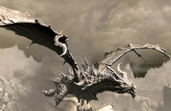
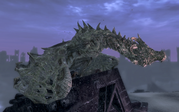
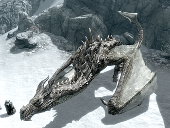

This Website is about the Dragons in the video game Skyrim
on this site it will tell you all named and unamed dragons.
it will also tell you if any of the dragons are Friendly or Hostile
The Elder Scrolls V: Skyrim is an open-world action role-playing video game
developed by Bethesda Game Studios and published by Bethesda Softworks.It is the fifth
main installment in the Elder Scrolls series, following 2006's The Elder Scrolls IV: Oblivion,
and was released worldwide for Microsoft Windows, PlayStation 3, and Xbox 360 on November 11, 2011.
| All Named Dragons | All Named Dragons | ||||||||||||||||||||||||||||||||||||||||||||||||
|---|---|---|---|---|---|---|---|---|---|---|---|---|---|---|---|---|---|---|---|---|---|---|---|---|---|---|---|---|---|---|---|---|---|---|---|---|---|---|---|---|---|---|---|---|---|---|---|---|---|
All Hostile Dragons
All Friendly Dragons |  |  |  |
If a Dragon is in both Friendly and Hostile lists that mean it can be tamed or it won't attack you right away
If a Dragon has a Gold name that means it can be tamed using the Bend Will Shout